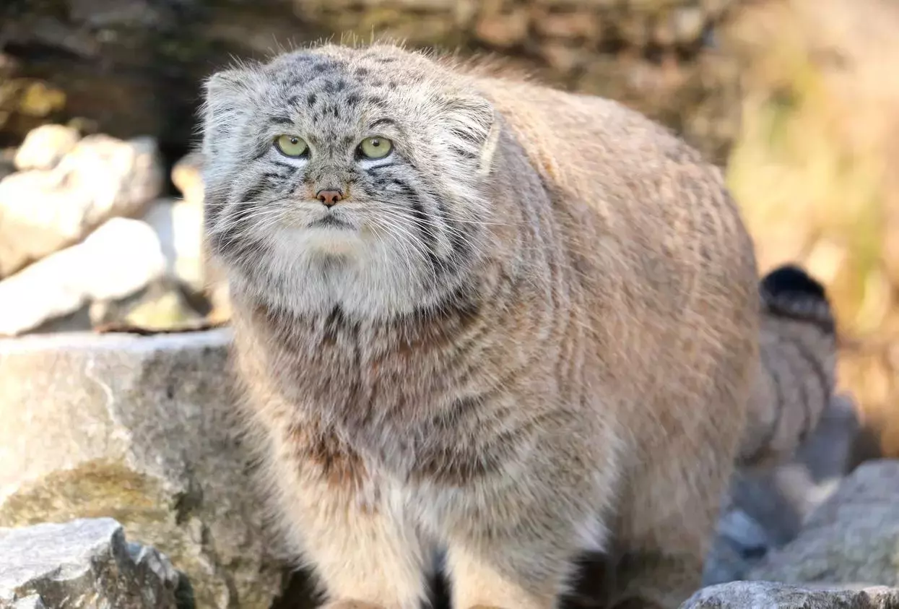
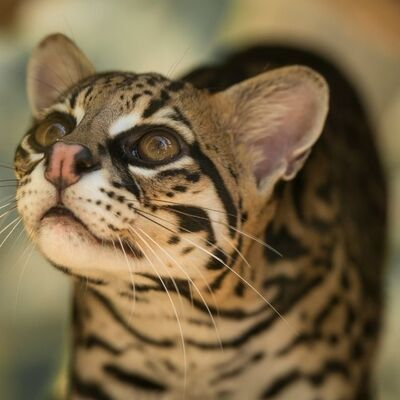
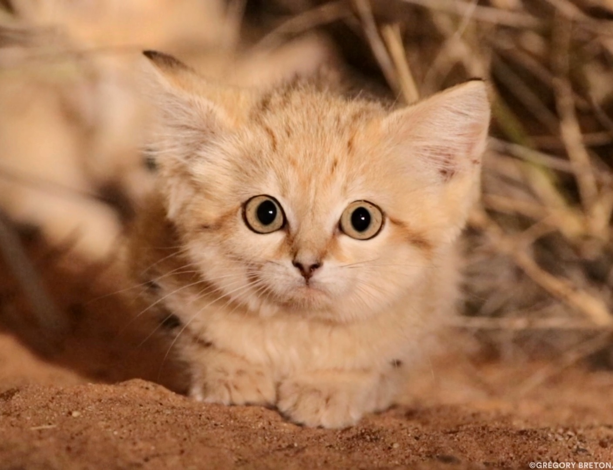
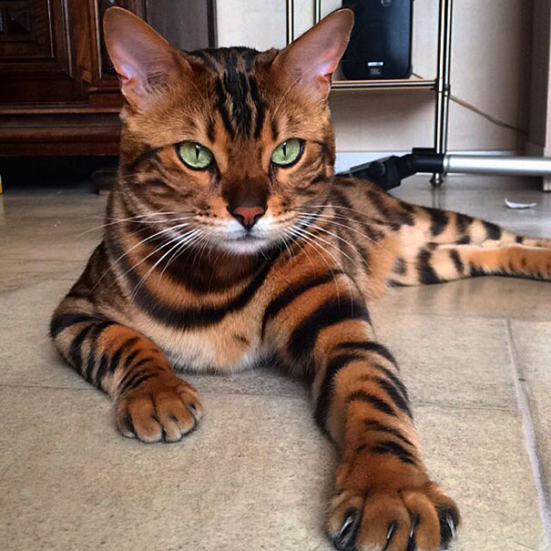

Orta Asya'nın mera ve bozkırlarına uzanan geniş ama dağınık bir popülasyona sahip, ufak bir kedi türüdür.

Güney Amerika'da yaşayan bir kedi türüdür. Bilimsel adı Leopardus Colocolo'dur. Penguen ve civciv avlamada ustalaşmış bir kedidir.

Bilimsel adı Felis Margarita olan Kum Kedisi, adını yaşadığı çöllerden alır. Çöl yaşamına adapte olmuş vahşi kedilerdir.
Dünyanın en zeki kedilerinden biri olan Korat kedileri, aynı zamanda nadir cinsler arasında yer alır. Tayland kökenlidirler.

Tüyleri orta uzunlukta olan Bengal Kedisi, orta yapılı ve parlak turuncu-kahverengi renklerdedir. Uysal, meraklı ve kendinden emindir. Oyuncu bir kişilikleri vardır.
Birman kedisi bir diğer adıyla “tapınak kedisi” olarak bilinen cinsin inanılmaz bir güzelliği vardır. Çok gizemli ve efsanevi bir tarihçeye sahiptir. Myanmar kökene sahip olan bu kediler, genellikle sevgiye çokça ihtiyaç duyarlar.